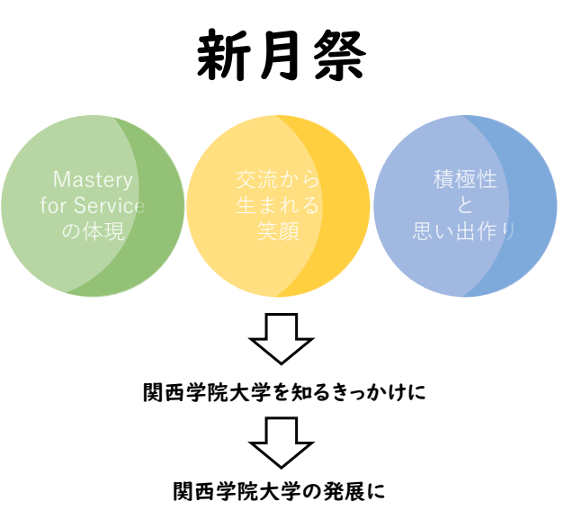

企画チュートリアル(神戸三田C)
スケジュール
新月祭2020基調
全ての物事の始りにはきっかけが存在します。満月は新月から始まり、 月は自らを光放つのではなく、太陽のひかりをきっかけに、暗い夜を照らします。 そして、世の中を明るくするきっかけとなるのです。 それならば関西学院大学を知るきっかけがこの新月祭でありますように。 私たちの活動が、そのきっかけをより濃く、確実なものとします。
関西学院大学の学生が新月祭を通じて、学内、学外の人と関わることで、 弊校のスクールモットーである「Mastery for Service 奉仕のための練達」を体現することに繋がります。 地域の人々を含めた、交流によって生まれる笑顔があふれる場所。 形あるものに参加することで高められる積極性と大学生活における貴重な関学生同士の絆や思い出作り。 これらを作り出せるきっかけが新月祭になるということを私たちは願っており、それを作り出すことが私たちの役目であると確信しています。
以上より、新月祭2020を運営することで、大学祭によって生まれる全てのきっかけによって、さらなる関学の発展へ繋げます。
関西学院大学新月祭2020実行委員会 
新月祭2020企画規約(神戸三田キャンパス)
企画書提出に関する注意事項
配布物・掲示物の事前点検について
企画援助金について